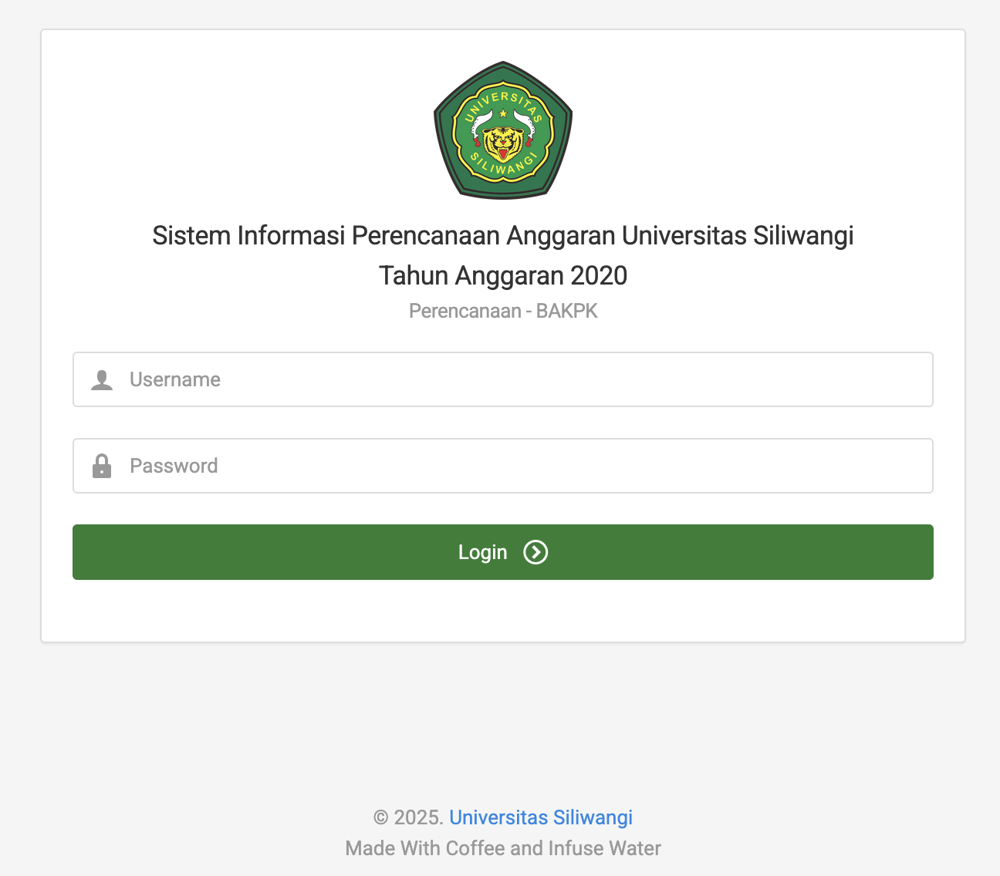
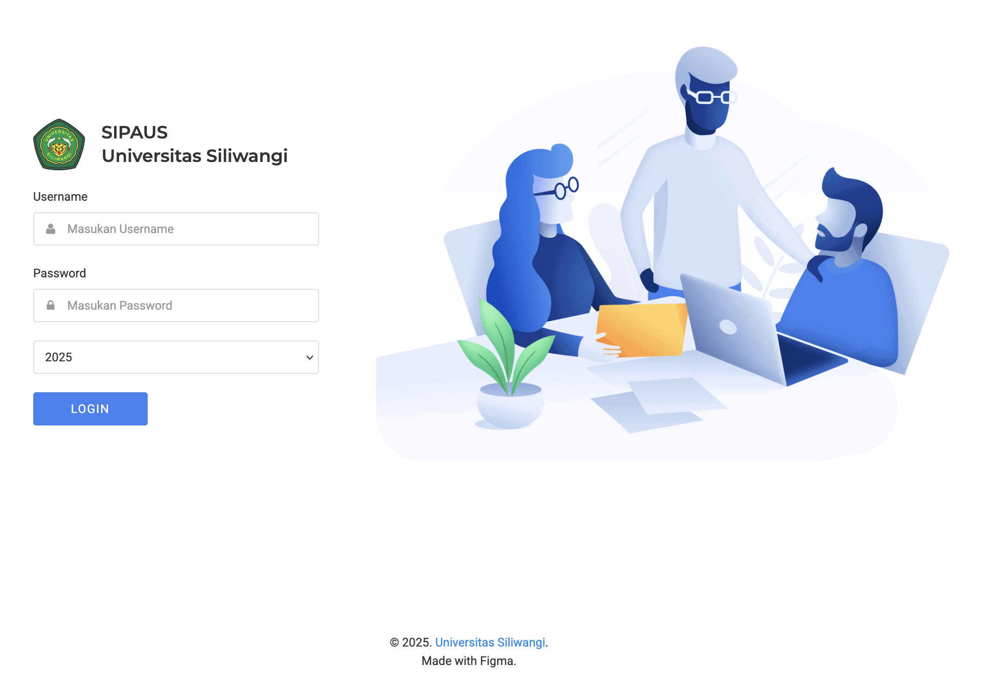

Selection of Fiscal Year When Logging in
How the Story Came to Be...
Back in the previous version of SIPAUS, the login page didn’t have an option to choose the fiscal year.
So basically, the Admin had to set the fiscal year from the master settings, and whatever they picked would apply to all units—no individual selections or anything like that.

At some point, we realized it was important to be able to switch between fiscal years easily—especially when there were financial audits from the Inspectorate General of the Ministry or even The Audit Board of Indonesia (Indonesian: Badan Pemeriksa Keuangan Republik Indonesia).
The problem was, if another user needed to check data from a different fiscal year, they had to contact the admin just to change the year setting. That setup wasn’t practical at all. It slowed things down and could mess with transactions in the current fiscal year,
which obviously isn’t ideal—especially during audits when things need to move fast and smooth.
The solution I came up with.
I implemented a dynamic fiscal year mechanism in SIPAUS, where the fiscal year is determined based on the user's
selection at the login page. This allows each user session to maintain its own fiscal year context independently, ensuring that users can access and interact with data relevant to the selected audit period without affecting other users or the current operational year.
The login page was designed using Figma, then converted into HTML and integrated within the Blade view through the Auth Login function.

And here's the final version of the login page, now with a fiscal year selection feature.

To add fiscal year session support, I included a tahun_id field in auth_user, which lets the system display data based on the fiscal year selected during login. With this addition, each user sees a different fiscal year view without affecting others.
Then I updated the login_post function from this:
$this->session->set_flashdata('loginStatus','success');
$tahunanggaran = Tahunanggaran::all();
Tahunauth::where('user_id', '=', Users::find($this->aauth->get_user_id())->id)->delete();
$tahunauth = new Tahunauth;
$tahunauth->user_id = Users::find($this->aauth->get_user_id())->id;
$inputThn = explode(",", $input['tahunanggaran']);
$tahunauth->tahun_id = $inputThn[0];
$tahunauth->tahun = $inputThn[1];
$tahunauth->save();
$session = [
'tahun_rab_aktif' => $tahunanggaran->where('is_rab','=',1)->first()->id,
'tahun_realisasi_aktif' => $tahunanggaran->where('is_realisasi','=',1)->first()->id,
'tahun_pengajuan_aktif' => $tahunanggaran->where('is_pengajuan','=',1)->first()->id,
'tahun_filter_aktif' => $tahunanggaran->where('is_filter','=',1)->first()->id,
'tahun_sbm_aktif' => $tahunanggaran->where('is_sbm','=',1)->first()->id,
];
$this->session->set_flashdata('loginStatus','success');
$tahunanggaran = Tahunanggaran::all();
Tahunauth::where('user_id', '=', Users::find($this->aauth->get_user_id())->id)->delete();
$tahunauth = new Tahunauth;
$tahunauth->user_id = Users::find($this->aauth->get_user_id())->id;
$inputThn = explode(",", $input['tahunanggaran']);
$tahunauth->tahun_id = $inputThn[0];
$tahunauth->tahun = $inputThn[1];
$tahunauth->save();
$session = [
'tahun_anggaran_aktif' => $tahunauth->where('user_id', '=', Users::find($this->aauth->get_user_id())->id)->first()->tahun_id,
];
'tahun_anggaran_aktif' => $tahunauth->where('user_id', '=', Users::find($this->aauth->get_user_id())->id)->first()->tahun_id, the system reads the tahun_id session selected during login. This way, the budget data shown to the user automatically follows the selected fiscal year.
Quick Recap:
Adding a tahun_id session to auth_user solves the issue of having different fiscal year selections for each user without interfering with others. Previously, switching to a different fiscal year required admin changes, which affected ongoing transactions in the current year.
This created unnecessary delays and potential risks in the workflow, especially during audits or when real-time data was needed.
Now, by allowing users to select the fiscal year directly on the login page, the session is set individually for each user. This way, users can access data specific to the fiscal year they need without impacting other users or disrupting the integrity of the ongoing transactions in the current fiscal year.
The system is now more efficient and flexible, supporting better user-specific experiences while maintaining data consistency.